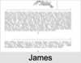

| [Index] |
| James CURLING (1808 - 1858) |
|  |
| b. 26 May 1808 at City of London |
| m. 17 Dec 1839 Maria RIDLEY (1813 - ) at Felstead |
| d. 18 Mar 1858 at Ipswich aged 49 |
| Parents: |
| William CURLING (1780 - 1866) |
| Lucretia DAVENPORT (1782 - 1840) |
| Siblings (5): |
| Jane CURLING (1810 - ) |
| Mary CURLING (1812 - 1876) |
| Sarah CURLING (1814 - 1897) |
| Martha CURLING (1816 - 1898) |
| John CURLING (1821 - 1863) |
| Grandchildren (1): |
| Joseph DALTON |
| Events in James CURLING (1808 - 1858)'s life | |||||
| Date | Age | Event | Place | Notes | Src |
| 26 May 1808 | James CURLING was born | City of London | Note 1 | ||
| 17 Dec 1839 | 31 | Married Maria RIDLEY (aged 26) | Felstead | ||
| 1840 | 32 | Birth of son James Davenport CURLING | |||
| 1840 | 32 | Death of mother Lucretia DAVENPORT (aged 58) | Denmark Hill, Lambeth | Note 2 | |
| 1842 | 34 | Birth of daughter Fanny Maria CURLING | |||
| 1842 | 34 | Birth of daughter Frank M CURLING | |||
| 1844 | 36 | Birth of daughter WIlliam CURLING | |||
| 1845 | 37 | Birth of daughter Lucretia CURLING | Reg City of London | ||
| 1848 | 40 | Birth of daughter Emily Sarah CURLING | Note 3 | ||
| 1851 | 43 | Birth of daughter Arthur Dixon CURLING | |||
| 1856 | 48 | Death of daughter Arthur Dixon CURLING (aged 5) | Ipswich | ||
| 18 Mar 1858 | 49 | James CURLING died | Ipswich | Note 4 | |
| Personal Notes: |
|
Freedom of City 1829
1851 living Lambeth |
| Created on a Mac™ using iFamily for Mac™ on 8 Oct 2023 |